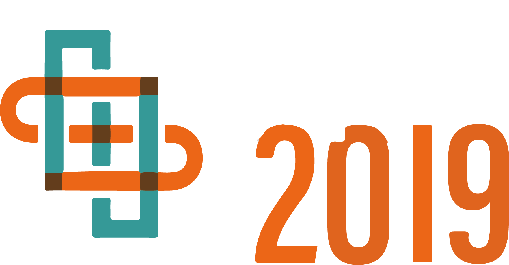

BBeep: A Sonic Collision Avoidance System for Blind Travellers and Nearby Pedestrians
Abstract
We present an assistive suitcase system, BBeep, for supporting blind people when walking through crowded environments. BBeep uses pre-emptive sound notifications to help clear a path by alerting both the user and nearby pedestrians about the potential risk of collision. BBeep triggers notifications by tracking pedestrians, predicting their future position in real-time, and provides sound notifications only when it anticipates a future collision. We investigate how different types and timings of sound affect nearby pedestrian behavior. In our experiments, we found that sound emission timing has a significant impact on nearby pedestrian trajectories when compared to different sound types. Based on these findings, we performed a real-world user study at an international airport, where blind participants navigated with the suitcase in crowded areas. We observed that the proposed system significantly reduces the number of imminent collisions.
Publications
Seita Kayukawa, Keita Higuchi, João Guerreiro, Shigeo Morishima, Yoichi Sato, Kris Kitani, and Chieko Asakawa.
2019.
BBeep: A Sonic Collision Avoidance System for Blind Travellers and Nearby Pedestrians.
ACM CHI Conference on Human Factors in Computing Systems (CHI'19).
(to appear)
粥川青汰, 樋口啓太, João Guerreiro, 森島繁生, 佐藤洋一, 森島繁生, Kris Kitani, 浅川智恵子.
BBeep:歩行者との衝突予測に基づく警告音を用いた視覚障害者のための衝突回避支援システム.
インタラクション,
2019.
Authors
Waseda Research Institute for Science and Engineering
University of Tokyo
Carnegie Mellon University